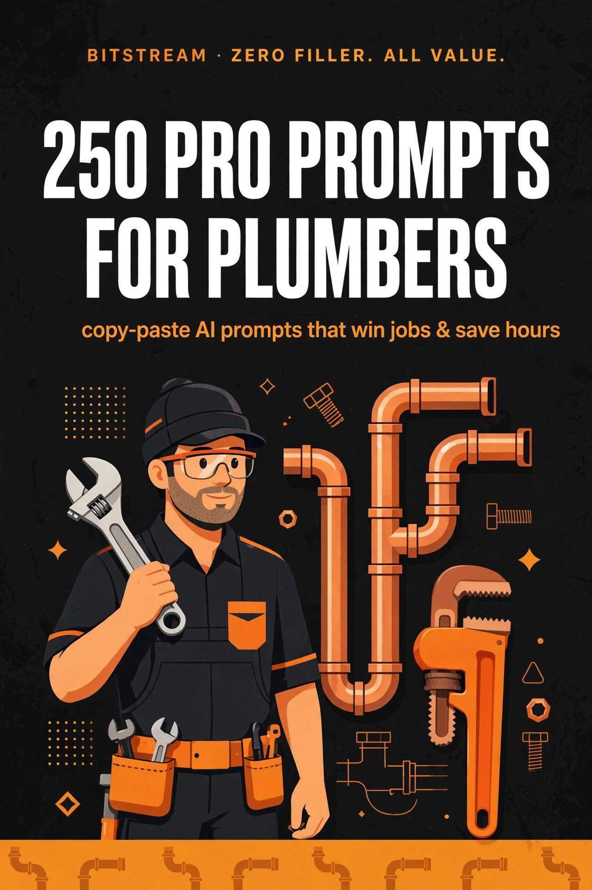

BITSTREAM · ZERO FILLER. ALL VALUE.
250 Pro
Prompts for Plumbers
250 copy-paste AI prompts that win jobs & save hours.
Open a free AI tool, paste, fill in the blanks, done.
PRO PACK · $14.99
How to use this pack (60 seconds)
- Open a free AI tool — ChatGPT (chatgpt.com), Claude (claude.ai), or Gemini (gemini.google.com). No paid plan needed.
- Copy any prompt and replace the [BRACKETED] parts with your job details.
- Be specific. Job type, pipe size, access conditions, customer situation — specifics in, quality out.
- Treat the first answer as a draft. Reply with "make it shorter," "more casual," or "add line items" until it's right.
- Talk instead of typing. Every one of these tools has a voice mode — dictate from the truck between jobs.
Rule 1 — AI is your checklist, not your license. Diagnostic and troubleshooting prompts are sounding boards and checklists. Always verify against your local code and your license before acting — the AI doesn't carry your liability, you do.
Rule 2 — Verify money and code facts. For pricing, permit requirements, or code questions, confirm with your local AHJ (authority having jurisdiction), your supplier, or your own books before you quote or cut.
Rule 3 — One win at a time. Don't try to AI your whole business today. Pick one prompt. The estimate that's due, the invoice that's late, the review you keep meaning to ask for.
1 · Estimates & Quoting Jobs
Price it right, win it fast — quotes that close.
PROMPT 001
Water heater swap quote builder
Build a line-item quote for swapping a [tank size] [gas/electric] water heater at [customer address], including the unit, expansion tank, drain pan, code-required venting changes, and haul-away of the old unit. Access conditions: [basement/attic/garage, stairs, tight closet]. Show labor hours, materials with [markup %], the [city] permit fee, and a total. End with a customer-friendly one-paragraph summary I can paste straight into my estimate.
PROMPT 002
Whole-house repipe estimate
Price a full repipe of a [bedrooms]-bedroom, [bathrooms]-bath home built in [year], about [square footage] sq ft, switching from [galvanized/copper/polybutylene] to [PEX/copper] with [number] fixture groups. Access: [crawlspace/slab/basement/attic]. Include drywall repair [included/excluded], [city] permit fees, and [number] days of labor for a [crew size]-person crew. Give me good/better/best tiers — basic PEX, PEX with manifold, full copper — and a plain-English scope paragraph for the customer.
PROMPT 003
Drain line replacement: trenchless vs. traditional
Compare quotes for replacing [length] ft of [pipe size] [clay/cast iron/Orangeburg] sewer line from the [house] to the [city main/septic tank], with [access conditions: driveway, landscaping, mature trees]. Price Option A: traditional open trench. Price Option B: trenchless pipe bursting or lining. List honest pros, cons, and realistic day counts for each, plus which [city] permits are needed. End with a one-paragraph customer summary that explains the price difference in plain words.
PROMPT 004
Tankless water heater conversion quote
Build a quote to convert a [tank size] [gas/electric] tank heater to a [gas/electric] tankless unit for a [number]-bathroom home with [number] occupants. Include gas line upsizing to [pipe size] if needed, new venting, condensate drain, electrical outlet, descaling valve kit, and old-unit haul-away. Access: [garage/basement/closet]. Show estimated annual energy savings, the payback period, and good/better/best tiers: value unit, mid-range with recirculation, premium condensing.
PROMPT 005
Bathroom rough-in plus trim, two-phase quote
Price plumbing rough-in and trim for a [full/half] bath remodel in the [room location]: [number] fixtures including [toilet/shower/tub/vanities]. Phase 1 (rough-in): [pipe material] supply, [drain size] drains, venting, pressure test, and inspection coordination for [city]. Phase 2 (trim): set fixtures the customer supplies [or I supply]. Price each phase separately, note that trim starts only after [inspection passed/tile finished], and attach my standard change-order clause.
PROMPT 006
Kitchen sink and disposal install
Quote replacing a [single/double/farmhouse] kitchen sink and a [disposal HP] garbage disposal in a home with [granite/laminate/quartz] countertops. Include new basket strainers, P-trap, supply lines, dishwasher connection, and caulking. Access: [cabinet condition, existing shutoffs working yes/no]. Note the extra charge if the countertop cutout needs enlarging, and give a flat-rate total plus a one-line upsell for a hot-water dispenser.
PROMPT 007
Toilet replacement quote
Price swapping [customer name]'s old toilet for a [standard/comfort-height/water-saving] model on the [floor] floor, with [access conditions]. Include a flange repair allowance up to $[amount], new supply line and shutoff valve, old-toilet haul-away, and caulking. Add an optional line item for a [bidet seat] upsell. Output a flat-rate quote with a one-line labor warranty statement of [warranty length].
PROMPT 008
Fixture install flat-rate price sheet
Create a flat-rate price sheet for common installs: kitchen faucet, bathroom faucet, showerhead, tub spout, toilet fill valve, and hose bib. Base it on my shop rate of $[hourly rate]/hr, [minutes] average install time, and [markup %] on parts, with separate pricing for customer-supplied vs. contractor-supplied fixtures. Include a clear line stating customer-supplied fixtures carry no parts warranty. Format it as a clean table I can print and keep in the truck.
PROMPT 009
Leak repair quote with unknown scope
Write a quote for a suspected [slab/wall/ceiling] leak at [location] where the full extent is unknown. Price Phase 1: leak detection and opening access, [hours] labor, with a not-to-exceed number. Price Phase 2 options once exposed: repair the [pipe size] [copper/PEX/CPVC] section vs. a full reroute. Include language stating Phase 2 is priced after exposure with the customer's written approval. Keep the tone honest and reassuring — no scare tactics.
PROMPT 010
Sewer camera inspection plus hydro jetting quote
Build a quote for a sewer camera inspection plus hydro jetting of [length] ft of [pipe size] line at a [residential/commercial] property. Include the video file delivered to the customer, a written findings summary with [recommendation options], and jetting with a root-cutting head if needed. Price the inspection standalone and bundled with jetting. Add one sentence explaining why jetting before a repair quote saves them money.
PROMPT 011
Water service line replacement
Price replacing the water service from the [meter/curb stop] to the house: [distance] ft of [pipe size] [copper/PEX/HDPE], with [soil type, driveway crossing yes/no, sidewalk permit needed yes/no]. Include excavation, bedding, backfill, compaction, surface restoration [included/excluded], and [city] permit fees. Give open-trench and directional-bore options with realistic timelines, and a short paragraph explaining why the line failed in customer-friendly words.
PROMPT 012
Gas line run for new appliance
Quote running a [pipe size] gas line [distance] ft from the [meter/manifold] to a new [range/generator/fire pit/pool heater] at [location]. Include the pressure test, [city] permit and inspection, sediment trap, and shutoff valve. Access: [basement/crawlspace/attic/exterior trench]. State clearly whether the final appliance hookup [is/is not] included. End with a one-line safety statement for my standard quote template.
PROMPT 013
Sump pump install or replacement
Price [installing/replacing] a sump pump in a [basement/crawlspace] pit that is [existing/new dig], including a [1/3 HP / 1/2 HP] [primary/battery-backup combo] pump, check valve, and discharge line to [daylight/storm drain]. Include a GFCI outlet if one is missing. Access: [stairs, ceiling height, standing water yes/no]. Add an optional battery-backup line item and a one-paragraph explanation of what the backup protects against. Flat-rate format with a [warranty length] labor warranty.
PROMPT 014
Pressure regulator (PRV) install
Quote installing a [pipe size] pressure reducing valve on the main water line at [location], where incoming pressure reads [PSI]. Include the valve, expansion tank check and replacement if needed, a pressure gauge, and post-install verification at [target PSI]. Access: [basement/crawlspace near main shutoff]. Add a plain-English paragraph for the customer on what high pressure does to fixtures and appliances, and why this valve pays for itself.
PROMPT 015
Backflow preventer install and annual test
Build a quote for installing a [RPZ/double-check] backflow preventer on a [irrigation/commercial/fire] line at [property address], [pipe size], [indoor/outdoor] install with freeze protection [needed/not needed]. Include the device, [city] permit, initial certification test, and filing the test report. Add a recurring annual test reminder line priced at $[amount]/year. Keep the language code-neutral — just reference "per local code requirements."
PROMPT 016
Hose bib and frost-free hydrant install
Price adding a [standard/frost-free] hose bib on the [exterior wall] at [location], tapping into [pipe material] [pipe size] supply in the [basement/crawlspace]. Include an interior shutoff valve, insulation, and sealing the wall penetration. Access: [finished/unfinished wall]. Give a flat rate with a discounted add-on price for a second bib, and one sentence on why frost-free matters in [climate zone].
PROMPT 017
Well pump and pressure tank quote
Quote [replacing/installing] a [submersible/jet] well pump at [depth] ft with a [tank size]-gallon pressure tank for a [number]-bedroom home. Include the pump, wire, drop pipe, pitless adapter [if applicable], pressure switch, tank tee kit, and a water test [included/excluded]. Access: [well head location, terrain]. Give good/better/best tiers — standard, plus constant-pressure controller, plus whole-house filter — and a realistic timeline including parts lead time.
PROMPT 018
Change-order quote generator
Turn this scope change into a professional change-order quote: original job was [brief description], and the customer now wants [added or changed work]. Price the added labor at $[hourly rate]/hr for [hours], materials with [markup %], and state the schedule impact of [extra days]. Include signature lines for approval before work continues and language moving the original completion date by [days]. Keep it firm but friendly — no apologizing for charging for extra work.
PROMPT 019
Good, better, best estimate tiers
Take this single-option quote and rebuild it as three tiers: [paste the quote or describe the job, e.g., water heater swap]. GOOD: code-minimum, value parts, [warranty]. BETTER: mid-range parts with [upgrades], [warranty]. BEST: premium parts with [upgrades], longest warranty. For each tier show the price, what is different in plain words, and one honest sentence on who each tier is right for. No upsell pressure — let the options sell themselves.
PROMPT 020
Repair vs. replace comparison quote
Build a side-by-side quote for [customer name]. Option A: repair the [failing equipment, age, condition] for $[repair price] with a [warranty]. Option B: replace with [new model] for $[replace price] with a [warranty]. Include honest remaining-life estimates for the repair option and annual operating-cost differences, with the math shown. Give a recommendation in plain language, ending with: "Either way you're covered — here's what I'd do if it were my house."
PROMPT 021
Quote terms, exclusions, and warranty block
Write the fine-print block for my estimates: payment terms ([deposit %] to schedule, balance on completion), exclusions ([drywall repair, painting, customer-pulled permits, landscaping restoration]), warranty ([labor warranty length], manufacturer parts per their terms), quote valid [days] days, and what voids the warranty ([customer-supplied parts, frozen pipes, etc.]). Plain English, no legalese, firm but fair. Keep it under 200 words so it fits on one page.
PROMPT 022
Handwritten notes to clean estimate
Turn these rough job notes into a professional written estimate: [paste notes or describe measurements, materials, and hours]. Organize it into scope of work, line items with quantities, labor, materials with [markup %], permits and fees, and a total. Flag anything ambiguous with [CONFIRM] instead of guessing. Output a customer-ready version plus a separate internal note listing every assumption you made.
PROMPT 023
Emergency and after-hours pricing quote
Write an after-hours emergency quote template for [job type, e.g., burst pipe] with my emergency rate of $[rate]/hr, a [minimum hours]-hour minimum, and parts at [markup %]. Include a two-phase option: Phase 1, emergency stabilization tonight to stop the damage; Phase 2, permanent repair at standard rates on [date]. Add one calming sentence for a stressed homeowner and a clear statement of what the emergency fee covers.
PROMPT 024
Explain my price vs. the cheap bid
Write a short, professional paragraph I can send [customer name] explaining why my $[my price] quote for [job type] is higher than a $[low price] handyman bid. Cover licensing, insurance, permits, warranty, and code-compliant materials — without badmouthing the other bidder. Tone: confident, respectful, educational. End with an invitation to walk through the line items together on a [5]-minute call.
PROMPT 025
Commercial tenant-improvement plumbing bid
Build a bid for plumbing in a [restaurant/office/retail] tenant improvement at [address]: [number] restrooms with [fixtures], grease interceptor [size] [if restaurant], water heater [size], and backflow [type]. Per plans dated [date] by [architect]. Include [number] site visits, coordination with GC [GC name], permit handling for [city], and a [weeks]-week schedule. List exclusions: demolition, concrete cutting beyond [inches], and fixture supply if owner-furnished. Format it for a GC bid package with a bid-valid [days] days line.
2 · Winning More Jobs
Marketing, reviews, and follow-up that fill the schedule.
PROMPT 026
Google review request text
Write a short text I can send [customer name] after finishing [job type] today. Thank them, ask for a Google review with my direct link [review link], and make it easy: suggest they mention [job type] and [technician name] so future customers can find us. Keep it under 60 words, warm and genuine, no begging and no discount bribe. Include a graceful line in case something wasn't perfect: "If anything's not right, reply here first and I'll make it right."
PROMPT 027
Reply to a 5-star Google review
Write a reply to this 5-star Google review for my plumbing company [company name]: "[paste review]". Thank them by name, mention the specific work ([job type]), and naturally include [city] and [service keyword] for local search. Keep it 2-3 sentences, human and upbeat. Sign off as [owner/tech name].
PROMPT 028
Reply to a 1-star review
Draft a calm, professional public reply to this 1-star review: "[paste review]". Acknowledge their frustration without admitting fault or arguing, invite them to call me directly at [phone] so I can make it right, and show future readers we take complaints seriously. Keep it to 3-4 sentences, no defensiveness and no details about the dispute. Then give me a separate private follow-up text to send them.
PROMPT 029
Quote follow-up: day 3
Write a day-3 follow-up text for [customer name], who received a $[amount] quote for [job type] on [date]. Reference one specific detail from the job ([detail, e.g., the corroded valve behind the water heater]) to show I remember them, ask if they have questions, and offer a [15]-minute call. Friendly, zero pressure, under 50 words. No discount mentioned.
PROMPT 030
Quote follow-up: final nudge
Write the final follow-up text for [customer name]'s $[amount] [job type] quote — it has been [7] days. Keep it short and honest: I'm holding a slot the week of [date], and after that my schedule fills up. Give them an easy yes ("just reply GO") and an easy no ("no worries, the quote's good for [30] days"). Dignified, not desperate.
PROMPT 031
Referral ask after a great job
Write a text to [customer name] the day after we finished [job type] and they were thrilled. Ask who they know — a neighbor, coworker, or family member — dealing with [common problem, e.g., slow drains or an aging water heater]. Make it a warm favor ask, not a sales pitch, and mention my referral thank-you: [reward, e.g., $25 gift card]. Under 60 words.
PROMPT 032
Referral program card wording
Write the wording for a simple referral program card: [company name] gives [reward, e.g., $50 off your next service] for every referred customer who books a job, and the new customer gets [their reward]. Keep it to 5 lines max, big-print friendly, plain language. Include a blank line for the referrer's name and phone so I can track it on paper.
PROMPT 033
"Just finished on your street" door hanger
Write door-hanger copy: "We just finished [job type] on [street/neighborhood] — [one-line result, e.g., new water heater, zero leaks]." Add 3 bullet signs a homeowner might have the same problem, my offer ([free camera inspection / $25 off]), and a clear call to action with [phone]. Front: the hook. Back: 3 quick trust points ([years] in business, licensed and insured #[license number], [review count] 5-star reviews). Punchy and neighborly.
PROMPT 034
Nextdoor neighborhood intro post
Write a Nextdoor post introducing [company name] to [neighborhood/city]. Lead with one useful free tip ([seasonal tip, e.g., where the main water shutoff usually is]), then 2 sentences on what we do ([services]), and a soft offer ([free estimate / $20 off first service]). Neighbor tone, not ad tone. Under 120 words, no ALL CAPS.
PROMPT 035
Before-and-after job photo caption
Write a Facebook/Instagram caption for before-and-after photos of [job type, e.g., a rusted-out water heater swap]. Hook line first, then what was wrong in plain words, what we did, and how long it took ([hours]). End with a question that invites comments ([e.g., "How old is your water heater?"]). Add [5] relevant hashtags including [city]. Conversational, no jargon.
PROMPT 036
Water heater flush reminder
Write a short text or email reminding past customers it has been [12] months since their water heater service. Explain in one sentence why flushing matters ([sediment buildup, efficiency, lifespan]), offer the flush special at $[price], and give a one-tap booking link or "reply YES." Under 70 words, helpful not pushy. Personalize with [customer name] and [last service date if known].
PROMPT 037
Freeze-prep seasonal reminder
Write a [fall/winter] reminder text for customers in [city/region]: [3] quick freeze-prep tips (drip faucets, insulate [exposed pipes], know where the main shutoff is), then offer my winterization check at $[price]. Urgent-but-calm tone, under 80 words. Include a "reply STOP to opt out" compliance line.
PROMPT 038
Google Business Profile description
Write my Google Business Profile description for [company name], a [residential/commercial] plumber in [city] serving [service area]. Include top services ([drain cleaning, water heaters, repipes, emergency service]), [years] years in business, licensed and insured, and [24/7 emergency] availability. 750 characters max, natural keyword use, no keyword stuffing. End with a call to action.
PROMPT 039
Website service page copy
Write website copy for a "[service] in [city]" page: a headline, 3-sentence intro, 5 bullet signs you need this service, 3 bullets on why to choose us ([years in business], [review count] reviews, [guarantee]), and a strong call to action with [phone]. Plain language a homeowner understands, around 250 words. Search-friendly without sounding robotic.
PROMPT 040
Missed-call text-back
Write an instant auto-reply text for missed calls: "Sorry I missed you — I'm [on a job/under a sink]. This is [name] with [company name]." Ask what they need ([emergency? leak? no hot water?]) and promise a callback within [15] minutes. Under 50 words, human and apologetic. Add a second version for after-hours that gives the emergency line: [emergency number].
PROMPT 041
Slow-week promo offer
Write a text and Facebook post for a slow week: [offer, e.g., $49 drain clearing for the first 50 ft, this week only] in [city]. Lead with the deal, add honest scarcity ([5] slots), and a clear "reply or call [phone]" call to action. Upbeat, no desperation. Include start and end dates ([dates]) and one exclusion line ([residential only, not valid with other offers]).
PROMPT 042
Emergency service ad copy
Write Facebook ad copy for 24/7 emergency plumbing in [city]: a headline under 40 characters and primary text under 125 words. Lead with the nightmare ([burst pipe at 2 AM]) and the fix ([a tech at your door in 60 minutes]). Include [phone] as the call to action and one trust line ([licensed and insured, [review count] 5-star reviews]). Urgent tone, no fear-mongering.
PROMPT 043
Realtor and property manager intro letter
Write a one-page intro letter to [realtor/property manager name] at [company]: who I am ([company name], [years] years in [city]), what I offer their clients ([pre-listing inspections, fast turnarounds, sewer scopes for buyers]), and my trade-partner perk ([priority scheduling / discounted inspection rate]). Professional but warm, one page max. End with a coffee-meeting ask, not a hard sell.
PROMPT 044
Maintenance membership pitch
Write a short pitch for my [plan name] at $[price]/year: what is included ([water heater flush, whole-home inspection, priority scheduling, 10% off repairs]). Frame it as "never think about your plumbing again" peace of mind. 100 words max, suitable for a leave-behind card or a text. End with: "Want me to add you while I'm here?"
PROMPT 045
Review QR table-tent card
Write the wording for a small table-tent card my techs leave behind: a headline asking for a Google review, [2] sentences on why reviews keep a local shop alive, a big "SCAN TO REVIEW" line with [QR code placeholder], and a fallback: "No smartphone? Just Google [company name]." Friendly and grateful, under 60 words.
PROMPT 046
Lost-job win-back message
Write a win-back text for [customer name], who chose another plumber for [job type] [weeks] ago. No guilt, no discount begging — just check in: hope the job went well, I'm here if anything needs a second look, and here is my [maintenance plan / annual checkup] if it is ever useful. Under 60 words, gracious and professional. Keeps the door open without groveling.
PROMPT 047
Thank-you note after the job
Write a short thank-you text sent the evening after completing [job type] for [customer name]. Thank them for trusting [company name], remind them of the [warranty length] labor warranty, and tell them the best compliment is a referral or a review ([review link]). Warm and personal, under 60 words. Sign as [tech name].
PROMPT 048
Holiday and seasonal promo
Write a [holiday/season, e.g., pre-holiday] promo text: [offer, e.g., $99 water heater tune-up plus whole-home plumbing check] so their [holiday guests / winter] don't meet a plumbing surprise. Festive but not cheesy, with clear dates ([dates]) and a call to action: reply YES or call [phone]. Under 70 words. Include one exclusion line.
PROMPT 049
Video testimonial request
Write a text asking [customer name] for a 30-second video testimonial about [job type]. Give them the exact 3 prompts to answer ([what was the problem], [how fast did we fix it], [would you recommend us]), and reassure them: a phone video is perfect, [30] seconds max, no need to dress up. Offer [small thank-you, e.g., $10 coffee card] as appreciation. Grateful, low-pressure tone.
PROMPT 050
Home inspector partnership outreach
Write an outreach text or email to [inspector name], a home inspector in [city]. Propose a two-way street: I get called for "further evaluation" on their reports, so I offer their clients priority scheduling and send the inspector a short written summary they can paste into the report. Peer-to-peer tone, 100 words max. Ask for a 10-minute call to talk it through.
3 · Scheduling & Dispatch
Tighter routes, fewer callbacks, no wasted windshield time.
PROMPT 051
Build tomorrow's route from this job list
Act as my dispatcher. Here are tomorrow's jobs: [paste job list with addresses, job type, and estimated time each]. Reorder them into the tightest driving route starting from [shop address or first area], and tell me which jobs could run long and throw off the rest of the day.
PROMPT 052
Spot gaps and wasted windshield time
I run [number] techs across [service area]. Here's today's schedule: [paste schedule with times and addresses]. Find the gaps, backtracking, and dead time between jobs, and tell me exactly how to fix it.
PROMPT 053
Plan the best week for a big install
I have a [type of install, e.g. repipe, water heater replacement] at [address] that will take about [hours] hours. My week looks like this: [paste current week's schedule]. Fit this job in where it causes the least disruption and keeps my techs' drive time down.
PROMPT 054
Handle an emergency call when the day is full
My schedule today is: [paste schedule]. A customer at [address] just called with [emergency description]. Tell me which job to move, what to tell that customer, and the fastest way to get a tech to the emergency.
PROMPT 055
Sort jobs by priority when everything is urgent
Here are my open jobs: [paste list with customer names, issues, and how long they've waited]. Rank them by true urgency (safety and water damage first), and tell me what to say to the customers who have to wait.
PROMPT 056
Set realistic drive-time buffers
My techs keep running late between jobs. Our service area covers [towns/ZIP codes]. Give me a simple rule for how much drive time to block between jobs based on distance, and a script for when to call the customer about running late.
PROMPT 057
Split a two-tech day for max efficiency
I have two techs tomorrow, [Tech 1 name] and [Tech 2 name]. [Tech 1] is better at [skill, e.g. diagnostics], [Tech 2] is faster at [skill, e.g. installs]. Here are the jobs: [paste list]. Assign each job to the right tech and order their routes.
PROMPT 058
Pre-screen a call before dispatching a truck
A customer called about [problem description]. Give me the exact questions to ask on the phone to figure out: is this a real emergency, what parts the tech probably needs, and how long the job will likely take — so I don't send a truck blind.
PROMPT 059
Write a same-day confirmation text
Write a short text I can send to [customer name] confirming their appointment tomorrow between [time window] for [job type]. Include what they need to do before we arrive (clear the area, make sure someone 18+ is home) and my company name [company name].
PROMPT 060
Write a "running late" text that keeps the customer
Write a text to [customer name] saying our tech is running about [minutes] late for their [time window] appointment because the previous job ran long. Make it sound professional, apologize once, and give them the option to reschedule.
PROMPT 061
Reschedule a job without losing it
I need to move [customer name]'s [job type] appointment from [original date/time] to [new date/time] because [reason]. Write what to say on the phone and a follow-up text that keeps them from calling someone else.
PROMPT 062
Turn a callback into a scheduled visit, not a complaint
[Customer name] called back saying the [repair done on date] is [problem: leaking again / not working right]. Write a calm response script that gets a tech back out there fast, and a checklist of questions to ask so the tech brings the right parts this time.
PROMPT 063
Cut down repeat callbacks with a dispatch checklist
I keep getting callbacks on [type of job, e.g. water heater installs]. Make me a pre-dispatch checklist: what to confirm with the customer, what parts and tools the tech must have on the truck, and what to test before leaving the job site.
PROMPT 064
Decide: send a tech or talk them through it
A customer reports [symptom, e.g. garbage disposal humming but not spinning]. Tell me whether this is a phone-fix or a truck roll, and if it's a phone-fix, give me the exact steps to walk them through safely.
PROMPT 065
Batch small jobs into one profitable day
I have these small jobs stacking up: [paste list with addresses and job types]. Group them by area into the fewest possible days, and tell me the minimum I should charge per stop so the day stays profitable.
PROMPT 066
Schedule around parts delivery
I'm waiting on [part name] for [customer name]'s job, and the supplier says it arrives [date]. The customer wants it done ASAP. Write a message updating them, and help me slot the job into [that date]'s schedule without bumping higher-priority work.
PROMPT 067
Plan on-call rotation fairly
I have [number] techs and need after-hours on-call coverage for [month]. [Tech names and any blackout dates]. Build a fair rotation, and write the on-call rules: what counts as a true emergency, response time expected, and extra pay.
PROMPT 068
Qualify a job before quoting a trip charge
A new customer in [town] wants [job description]. Write the questions I should ask to decide whether to quote over the phone, charge a diagnostic visit fee of [amount], or decline the job — and how to explain the trip charge so they don't argue.
PROMPT 069
Fill a last-minute cancellation
[Customer name] just cancelled their [job type] slot tomorrow at [time]. I have a waitlist: [names and job types]. Write a text to send the waitlist offering the slot first-come, and tell me which job is the best fit to fill it.
PROMPT 070
Set daily start times that actually work
My techs start at [time] but the first job never starts on time because of [loading truck / morning meeting / traffic]. Design a morning routine with exact times: shop arrival, truck check, first-job arrival — so we're on site when we say we will be.
PROMPT 071
Handle a no-show customer
[Customer name] wasn't home for their [time window] appointment for [job type], and my tech waited [minutes]. Write a firm but professional message about the missed-visit fee of [amount] and getting them rescheduled.
PROMPT 072
Plan service-area boundaries that make money
I currently serve [list of towns/ZIPs] but some are too far to be profitable. Help me decide which areas to keep, which to add a trip surcharge to, and which to drop — based on average ticket size [amount] and drive time.
PROMPT 073
Create a weather-day backup plan
[Storm/extreme weather] is forecast for [date] and I may need to cancel outdoor or crawlspace jobs. Look at my schedule: [paste schedule]. Tell me which jobs to move, what order to call customers, and what to say.
PROMPT 074
Track each tech's real capacity
[Tech name] says they're slammed but I think there's room. Their typical day: [describe jobs and times]. Analyze where the time actually goes and tell me how many jobs per day this tech can realistically handle without rushing.
PROMPT 075
Write an end-of-day dispatch recap template
Make me a simple end-of-day template my techs fill out in 2 minutes: jobs completed, jobs that need a return visit (with reason and parts needed), and anything the office needs to follow up on tomorrow.
4 · Invoicing & Getting Paid Faster
Invoices that get paid, follow-ups that don't feel awkward.
PROMPT 076
Write an invoice email that gets paid fast
Write a professional email to [customer name] for invoice #[number], [amount] due, for [work completed] done on [date]. Include how to pay (check, card, [payment methods]) and a clear due date of [date]. Keep it short and friendly.
PROMPT 077
Add a late fee without losing the customer
Write a message to [customer name] whose $[amount] invoice is now [days] past due. Remind them of the balance, mention the [late fee % or amount] that applies after [terms], and give them an easy way to pay today — firm but not rude.
PROMPT 078
Follow up on an unpaid invoice (first nudge)
[Customer name] owes $[amount] for [job description], due [date] — it's now [days] overdue and they haven't responded. Write a polite first follow-up text that assumes they just forgot, with a direct payment link or instructions.
PROMPT 079
Follow up on an unpaid invoice (second nudge)
I already reminded [customer name] once about their $[amount] overdue invoice (now [days] past due). Write a firmer second message that makes clear this needs attention this week, without sounding threatening.
PROMPT 080
Final notice before collections
[Customer name] owes $[amount], now [days] overdue after [number] reminders. Write a final notice giving them [number] days to pay before I send it to collections or file a lien. Professional, serious, no bluffing.
PROMPT 081
Ask for payment on the spot, politely
My tech just finished a [job type] for [customer name], total $[amount]. Write a natural script for the tech to ask for payment before leaving — card, check, or cash — without it feeling awkward.
PROMPT 082
Offer a payment plan that protects me
[Customer name] can't pay the full $[amount] for [job description] at once. Draft simple payment plan terms: down payment amount, installment schedule, what happens if they miss a payment, and a short agreement they can sign.
PROMPT 083
Require a deposit the right way
I want to require a [percentage]% deposit on jobs over $[amount]. Write the exact language for my quotes and a message explaining the deposit to customers so it sounds standard, not like I don't trust them.
PROMPT 084
Handle "the check is in the mail"
[Customer name] said the check for $[amount] is in the mail, but it's been [days] and nothing arrived. Write a reply that takes them at their word while setting a firm backup deadline and offering an instant payment option.
PROMPT 085
Respond to a customer disputing the bill
[Customer name] says the $[amount] invoice for [job description] is too high because [their complaint]. Write a calm response that walks through what was done, references the agreed price of [quoted amount], and offers one reasonable concession if needed.
PROMPT 086
Break down an invoice so customers stop questioning it
Here's my invoice: [paste line items]. Rewrite it in plain language a homeowner understands — what each line means and why it costs that — so [customer name] pays instead of calling with questions.
PROMPT 087
Set payment terms that actually get you paid
I currently use [net 30 / due on receipt / other terms] and customers pay in about [days] on average. Recommend payment terms for residential vs. commercial/property-manager work, including early-pay discount options that don't kill my margin.
PROMPT 088
Write a receipt with a review ask built in
Write a payment receipt email for [customer name] who just paid $[amount] for [job]. Thank them, confirm the payment, remind them the work is warrantied for [warranty period], and naturally ask for a Google review with the link.
PROMPT 089
Collect a balance on a return visit
I have to go back to [customer name]'s house for [callback/warranty issue], and they still owe $[amount] from the original invoice. Write what to say about the balance while I'm there — collect it without making the warranty visit feel transactional.
PROMPT 090
Invoice a property manager correctly
Write an invoice package for [property manager/company name]: invoice #[number], $[amount], for [work] at [property address], unit [number] if applicable. Include the work-order or PO number [number], before/after photos note, and anything else property managers need to approve payment fast.
PROMPT 091
Get paid before you leave a rental property
The tenant at [address] authorized the work but the landlord [name] is the one paying $[amount]. Write a message to the landlord confirming the completed work and requesting payment today, including what documentation I'll send.
PROMPT 092
Handle a bounced check professionally
[Customer name]'s check for $[amount] bounced. Write a message telling them, adding the bank's returned-check fee of $[fee], and requesting immediate payment by card or cashier's check — professional, no accusations.
PROMPT 093
Offer an early-pay discount email
Write an email offering [customer name] a [percentage]% discount if they pay their $[amount] invoice within [number] days. Make the math clear so paying early feels like the obvious choice.
PROMPT 094
Reconcile a partial payment
[Customer name] paid $[partial amount] of their $[total] invoice and didn't explain the shortfall. Write a message acknowledging the payment, stating the remaining balance of $[balance], and asking what the issue is.
PROMPT 095
Write a lien warning letter (where legal)
[Customer name] owes $[amount] for work completed on [date] at [property address], now [days] overdue. Draft a preliminary lien notice letter appropriate for [state], stating the amount, the property, and the deadline before I file. Note: tell me to verify this with a local attorney before sending.
PROMPT 096
Create a simple weekly accounts-receivable routine
I have about [number] open invoices totaling $[amount]. Build me a 30-minute weekly routine: which invoices to chase first, what to send each day, and a simple tracking sheet format so nothing slips through the cracks.
PROMPT 097
Text a customer their invoice link
Write a short text to [customer name]: their invoice for $[amount] ([brief job description]) is ready, here's the payment link [link], due [date]. Under 40 words, friendly tone.
PROMPT 098
Explain your pricing on the invoice footer
Write 2-3 sentences for the bottom of my invoices explaining that pricing reflects licensed labor, quality parts, and warranty coverage — so customers understand the value instead of price-shopping the number.
PROMPT 099
Follow up after a big commercial job
We just finished a $[amount] job for [company name] at [address]. Write a thank-you email confirming completion, attaching the final invoice with [payment terms], naming the contact [name] for any questions, and asking about their upcoming project schedule.
PROMPT 100
Recover a written-off bad debt gracefully
[Customer name] never paid $[amount] from [date] and I wrote it off. Write a brief, no-pressure message reopening the door — offering to settle for $[settlement amount] or set up payments — in case their situation has changed.
5 · Hiring & Training Apprentices
Find good help, train them right, keep them around.
PROMPT 101
Write a Job Ad That Attracts Hustlers, Not Just Applicants
Write a help-wanted ad for a [1st/2nd/3rd-year] plumbing apprentice at my company in [city/state]. We do [residential service/commercial/new construction] work and offer [pay range, benefits, tool allowance, etc.]. Make it sound like a real opportunity for someone who wants to learn a trade, not a desperate plea for bodies. Include what a great hire looks like and one line that filters out people who just want a paycheck.
PROMPT 102
Interview Questions That Reveal Work Ethic
Give me 10 interview questions for hiring a plumbing apprentice with [no experience / 1 year experience]. I want questions that reveal work ethic, reliability, and attitude — not just technical knowledge. For each question, tell me what a great answer sounds like and what a red-flag answer sounds like.
PROMPT 103
Score Apprentice Candidates Side by Side
I interviewed [number] candidates for an apprentice position. Here are my notes on each: [paste notes]. Score them on reliability, coachability, physical ability, and communication, 1–10 each, and rank them. Tell me who you'd hire and why, in plain language I can act on.
PROMPT 104
Write a Fair Apprentice Offer Letter
Draft an offer letter for a [1st/2nd-year] plumbing apprentice at [company name]. Include: starting wage [$X/hr], [90-day] review period with a raise tied to [specific milestones], work hours, overtime policy, tool requirements, and [state]'s apprentice registration requirements. Keep it clear and professional — one page.
PROMPT 105
Build a 90-Day Apprentice Training Plan
Build a 90-day training plan for a brand-new apprentice with zero plumbing experience. Break it into weekly goals covering: tools and safety, [pipe materials you work with], basic service calls they'll shadow, and skills they should be able to do alone by day 90. Include a simple checklist I can sign off each week.
PROMPT 106
Train an Apprentice on Soldering Step by Step
Write a step-by-step training guide I can hand to my apprentice for learning to solder [copper pipe, size range]. Cover: tools and materials needed, surface prep, flux, heat technique, common mistakes (cold joints, overheating), and how to tell a good joint from a bad one. Assume they've never held a torch.
PROMPT 107
Teach Press-Fit Systems the Right Way
My apprentice needs to learn [ProPress/SharkBite/other press-fit system] for [copper/PEX/stainless] work. Write a training sheet covering: how the tool works, pipe prep and depth marks, what a proper press looks and sounds like, the top 3 mistakes that cause callbacks, and when NOT to use press fittings.
PROMPT 108
Apprentice Safety Orientation Script
Write a safety orientation talk I can give a new apprentice on day one. Cover: PPE for plumbing work, torch and open-flame rules, working in crawlspaces and attics, electrical awareness around water heaters and pumps, and what to do if something goes wrong. Make it sound like a boss talking, not a legal document.
PROMPT 109
Teach Drain Cleaning Without Breaking Things
Write a training guide for teaching an apprentice to run a drain machine on [kitchen lines/bathroom lines/main sewer lines]. Cover: choosing the right cable and head, how to feed without kinking, what resistance means, when to stop and call me, and cleanup. Include the mistakes that cost us money.
PROMPT 110
Quiz My Apprentice on Basic Plumbing Knowledge
Create a 20-question quiz to test my [1st/2nd-year] apprentice on: pipe materials and fittings, basic drainage and venting, water heater components, and jobsite safety. Mix multiple choice and short answer. Include an answer key so I can grade it fast.
PROMPT 111
Set Clear Expectations for Ride-Alongs
Write a one-page ride-along expectations sheet for my apprentice. Cover: arrival time and what to bring, how to act in a customer's home, when to watch vs. when to jump in, phone use rules, and how they'll be evaluated each week. Firm but fair tone.
PROMPT 112
Teach Water Heater Installs Start to Finish
Write a complete training checklist for teaching an apprentice to install a [gas/electric, tank/tankless, size] water heater. Break it into: old unit removal and disposal, new unit placement, water/gas/electrical connections, venting, testing, and cleanup. Note the steps where I must double-check their work.
PROMPT 113
Correct Mistakes Without Losing Good People
My apprentice keeps [describe the recurring mistake, e.g. leaving fittings uncleaned / rushing solder joints]. Write me a short, direct conversation script to address it — firm about the standard, fair about the learning curve, and ending with a clear plan. I want to keep this kid.
PROMPT 114
Build a Skills Checklist by Apprentice Year
Create a skills checklist for plumbing apprentices in [state], broken into Year 1, Year 2, Year 3, and Year 4. Each year lists the skills they should master (e.g. Year 1: tool ID, soldering copper; Year 2: rough-in, water heaters). I want to track progress and know when someone's ready for more responsibility or a raise.
PROMPT 115
Explain Drainage, Venting, and Slope Simply
Explain residential DWV basics — drainage, venting, and proper slope — in plain language I can use to teach my apprentice. Use real examples from [single-family homes / the type of work you do]. Cover why vents matter, what happens with wrong slope, and the 3 most common DWV mistakes apprentices make.
PROMPT 116
Teach PEX Installation Best Practices
Write a training sheet for my apprentice on installing [PEX-A/PEX-B] with [expansion/crimp/clamp] fittings. Cover: cutting and prep, proper expansion or crimp technique, bend supports vs. fittings, protecting PEX from UV and damage, and pressure testing. Include what a failed connection looks like.
PROMPT 117
Onboard an Experienced Hire in One Week
I just hired a plumber with [X years] experience from [residential/commercial] work. Write a one-week onboarding plan that gets them up to speed on: how we run service calls, our pricing and quoting process, the truck stock system, paperwork and photos, and our customer service standards. I don't want to waste their time re-teaching what they know.
PROMPT 118
Write a Performance Review for an Apprentice
Write a performance review template for a [1st/2nd/3rd-year] apprentice at the [6-month / 1-year] mark. Include sections for: technical skills, speed and efficiency, customer interaction, reliability, and areas to improve. Add a section for setting the next raise tied to specific skills they'll learn.
PROMPT 119
Handle an Apprentice Who's Not Cutting It
My [1st/2nd-year] apprentice is struggling with [specific issue: attendance, attitude, skill gaps, etc.]. Write me a written warning that's fair, specific, and gives them a clear 30-day improvement plan with measurable goals. I want documentation that protects me if I have to let them go.
PROMPT 120
Teach Rough-In Plumbing for New Construction
Write a training guide for teaching my apprentice rough-in work on [new residential homes / commercial buildings]. Cover: reading the plans, layout and measuring, drilling and notching rules, setting tubs/showers/toilets to spec, pressure testing, and what the inspector will check. Assume they know basic tools.
PROMPT 121
Teach Fixture Trim-Out Like a Pro
Write a step-by-step trim-out training guide for my apprentice covering [faucets, toilets, shower valves, etc. — list the fixtures you install]. For each fixture type: what's in the box, rough-in measurements to verify first, installation order, sealing and caulking, and the final quality check before we leave.
PROMPT 122
Build a Tool List for Each Apprentice Year
Create a tool purchase list for apprentices by year: Year 1 essentials (must own by day 30), Year 2 additions, Year 3 additions. Base it on [residential service / commercial / new construction] work. Mark which tools I provide vs. which they buy, and give a rough budget per year so nobody's surprised.
PROMPT 123
Cross-Train on Septic and Well Systems
My apprentice only knows city water/sewer work. Write a training overview for [septic systems / well pumps / both] covering: how the system works, the components they'll see, basic diagnostics, what we can service vs. what needs a specialist, and safety concerns specific to these systems.
PROMPT 124
Create a Raise Ladder Tied to Skills
Design a pay ladder for my apprentices: starting wage [$X], then raises at [6 months / 1 year / etc.] tied to mastering specific skills like [soldering, water heaters, rough-in, drain cleaning]. Make it transparent so they know exactly what to learn to earn more — I want this to retain good people.
PROMPT 125
Run a Weekly 15-Minute Toolbox Talk
Give me 12 weekly 15-minute toolbox talk topics for my plumbing crew, one per week for a quarter. Each topic: a 3-sentence summary I can read aloud, one real-world story or example, and one question to ask the crew. Mix safety, technique, and customer service.
6 · Truck Stock & Materials Lists
The right parts on the truck, every job, no supply-house runs.
PROMPT 126
Build the Ultimate Residential Service Truck Stock List
Build a complete truck stock list for a residential service plumber doing [drain cleaning / repairs / remodels — pick your mix]. Organize by category: copper/PEX/CPVC fittings, valves, supply lines, wax rings and closet parts, faucet repair kits, water heater parts, drain machine heads, and consumables. Include sizes and quantities that cover 90% of calls without a supply-house run.
PROMPT 127
Stock a Truck for Commercial Service Work
Build a truck stock list for commercial plumbing service: [office buildings / restaurants / retail — pick your type]. Cover the parts that differ from residential — flushometer parts, commercial faucet cartridges, larger pipe sizes, cleanout fittings, grease-related items. Focus on what gets a commercial customer back running same-day.
PROMPT 128
Create a Water Heater Install Kit Checklist
Create a grab-and-go kit checklist for water heater installs. Separate lists for [gas tank / electric tank / tankless] units in [30/40/50-gallon] sizes. Include: connectors, shutoff valves, expansion tanks, pans and drains, venting materials, gas flex lines or electrical whips, and the consumables (tape, dope, flux). I want the apprentice to load this without asking questions.
PROMPT 129
Stock Faucet and Toilet Repair Parts by Brand
I service mostly [Moen / Delta / Kohler / American Standard — list your top brands]. Build a truck stock list of the cartridges, stems, flush valves, fill valves, flappers, and supply parts for these brands that covers the most common repairs. Include part numbers where they're standard and note which parts are brand-specific vs. universal.
PROMPT 130
Build a Drain Cleaning Arsenal List
List every cable, cutter head, blade, and accessory a drain tech needs on the truck for [kitchen / bathroom / main line / all three]. Include cable sizes and lengths, which heads for roots vs. grease vs. scale, retrieval tools, and inspection camera gear. Note what wears out and how often to replace it.
PROMPT 131
Create a Remodel Rough-In Materials Calculator
I need a materials calculator for a bathroom remodel rough-in: [tub/shower combo / walk-in shower / tub only], [toilet location], [vanity with single/double sinks], in [copper / PEX]. Generate a full materials list — pipe, fittings, valves, straps, hangers, shower valve and trim rough parts — with quantities. I want to buy once, not make three trips.
PROMPT 132
Stock a New Construction Rough-In Trailer
Build a bulk materials list for roughing in [number] new homes at [square footage range], [slab / crawlspace / basement], in [PVC/ABS for DWV, PEX/copper for water]. Include pipe by size and footage, fitting counts with 10% waste factor, hangers, nail plates, shower/tub units, and testing equipment. Organize it as a purchase order I can hand to the supply house.
PROMPT 133
Build a Gas Line Materials Checklist
Create a materials checklist for running a new gas line to a [water heater / furnace / range / generator], [length] feet, in [black iron / CSST]. Include: pipe or tubing, fittings, shutoff valves, sediment traps, hangers, thread sealant rated for gas, and pressure-test gear. Add the leak-check steps as a footer so nothing gets skipped.
PROMPT 134
Create a Sewer Line Replacement Materials List
Generate a complete materials list for replacing [length] feet of [4-inch] sewer line by [open trench / trenchless method] in [PVC / HDPE]. Include: pipe, couplings, adapters to existing line, bedding gravel, cleanouts, backfill considerations, and permit/inspection-related items. I want one purchase, one job.
PROMPT 135
Stock Emergency Repair Parts for After-Hours Calls
Build an after-hours emergency kit for the on-call truck: the parts that fix burst pipes, major leaks, backed-up sewers, and dead water heaters at 2 AM when the supply house is closed. Focus on universal and temporary-fix items — repair clamps, caps, plugs, SharkBite fittings, wax rings, fill valves. What saves the night?
PROMPT 136
Organize Truck Bins With a Label System
Design a bin and label system for organizing my service truck. I carry [describe your main categories]. Give me: bin categories, label wording an apprentice can understand, where heavy vs. light items go, and a restocking rule (e.g. reorder when down to X). Make it simple enough that any tech can find parts in the dark.
PROMPT 137
Build a Toilet Rebuild Kit for Every Brand
Create a universal toilet rebuild shopping list: fill valves, flappers by size, flush valves, tank bolts, wax rings (standard and extra-thick), closet bolts, supply lines, and shims. Note which items fit [Kohler / American Standard / Toto / Gerber — your common brands] and which are truly universal. This kit should handle any toilet rebuild on the first trip.
PROMPT 138
Create a Seasonal Truck Stock Adjustment
Adjust my truck stock for [winter / summer] in [your climate region]. What extra parts and materials do I need? (Think: burst pipe repairs in winter, AC condensate issues in summer.) List additions, quantities, and anything I can pull off the truck until next season to free up space.
PROMPT 139
Stock Parts for Tankless Water Heater Service
Build a service parts list for maintaining and repairing [Navien / Rinnai / Rheem / Noritz — your brands] tankless water heaters. Include: descaling kits, filters, igniters, flow sensors, common gaskets and O-rings, and condensate neutralizer media. Note which parts are brand-specific and worth stocking vs. ordering as needed.
PROMPT 140
Build a Repipe Materials Estimate Template
Create a materials template for a whole-house repipe: [2/3/4-bath home], [square footage], [slab/crawlspace/basement], repiping in [PEX-A / copper]. List pipe by size with footage estimates, fitting counts by type, manifolds if used, shutoff valves, straps and supports, drywall repair considerations, and a waste factor. I want to price materials in 10 minutes.
PROMPT 141
Create a Fixture Installation Day Kit
Build a kit checklist for a day of fixture installs: [number] faucets, [number] toilets, [garbage disposal / dishwasher / etc.]. Include every supply line, shutoff valve, wax ring, caulk, sealant, and consumable needed — plus the "forgotten" items that cause mid-job supply runs. Pack it the night before, install all day.
PROMPT 142
Stock Sump Pump and Ejector Pump Parts
Build a truck stock list for sump pump and sewage ejector service: [Zoeller / Liberty / Wayne — your brands], common HP sizes. Include: replacement pumps worth stocking, check valves, float switches, basins and covers, discharge pipe and fittings, alarms, and battery backup components. What gets a flooded basement fixed today?
PROMPT 143
Build a Hydronic and Boiler Service Kit
Create a service kit for [residential boilers / hydronic heating] work on [brand] systems. Include: zone valves and actuators, circulator pumps, expansion tanks, air eliminators, pressure gauges, relief valves, common gaskets, and water treatment chemicals. Note the parts that fail most often in [your region]'s heating season.
PROMPT 144
Audit My Truck Stock for Dead Weight
Here's my current truck stock list: [paste list]. Tell me what's dead weight I rarely need, what's missing for the [residential service / commercial] work I actually do, and what I'm overstocked on. Suggest a leaner list that still covers 90% of my calls.
PROMPT 145
Create a Job-Specific Materials Pull Sheet
I have a [water heater replacement / bathroom rough-in / repipe / sewer repair] job tomorrow at [address or job name]. Generate a pull sheet: every part and material needed, quantities, and which bin or shelf it's in. Format it so my apprentice can pull everything tonight without calling me.
PROMPT 146
Stock Well Pump and Pressure Tank Parts
Build a stock list for well system service calls: [submersible / jet pump] setups, common HP sizes. Include: pressure switches, pressure tanks (sizes worth stocking), check valves, pitless adapters, wire and connectors, torque arrestors, and testing equipment. What do I need to fix most well calls on the first visit?
PROMPT 147
Build a Commercial Restroom Retrofit Kit
Create a materials kit for retrofitting [number] commercial restrooms with [flushometer valves / sensor faucets / water-saving fixtures]. Include: the fixtures, rough-in adapters, supply stops, carriers and mounting hardware, caulk and sealants, and signage for the facility manager. One kit per restroom, packed and labeled.
PROMPT 148
Create a Pipe Freezing Kit Checklist
Build a kit checklist for using pipe freezing equipment to [replace a valve / make a repair] without draining the system. Include: freeze machine or CO2 kit supplies, jackets by pipe size, thermometers, backup repair fittings in case the freeze fails, and towels/buckets. Add safety notes for working with CO2 or electric freeze units.
PROMPT 149
Stock Backflow Preventer Test and Repair Parts
Build a stock list for backflow preventer testing and repair on [Watts / Febco / Zurn — your brands], sizes [3/4-inch to 2-inch]. Include: test kit gauges and hoses, repair kits by model, check valve springs, O-ring assortments, and shutoff valve parts. Note which repair kits to stock vs. order by model number.
PROMPT 150
Set Par Levels and Reorder Rules
Design a par-level inventory system for my truck stock. For my top [20/30] most-used parts, set: par quantity, reorder point, and typical weekly usage for a [residential service] plumber. Give me a simple weekly restocking routine — 15 minutes — that keeps the truck full without overbuying.
7 · Customer Communication Scripts
Delays, upsells, and bad news — said right.
PROMPT 151
Delayed Arrival Text
Write a short text message to [customer name] at [address] explaining I'll be [number] minutes late to our [appointment type] because [reason]. Keep it under 40 words, sound professional and apologetic but not desperate, and give them the option to reschedule if the delay doesn't work. Include my name [my name] and business [business name].
PROMPT 152
Parts Delay Bad News
Draft a message to [customer name] explaining the part we need for their [job type] won't arrive until [date] instead of [original date], and their job is being pushed back. Offer two options: wait for the part, or a temporary fix now for [$ amount] that gets them running until then. Sound like a straight-talking plumber, not a corporate script.
PROMPT 153
Price Increase Heads-Up
Write a script for telling a customer in person that the job will cost [$ amount] more than the original quote of [$ original amount] because [reason, e.g. discovered a cracked flange behind the wall]. Keep it honest and calm, explain what changed, and give them a clear yes/no decision point. Under 100 words.
PROMPT 154
Upsell the Water Softener
Write a conversational upsell script for a plumber on a [job type] job who notices [signs of hard water, e.g. scale buildup on fixtures, customer location]. The script should mention the problem they can see, connect it to the softener as the fix, name a ballpark price of [$ amount], and end with a low-pressure question. No scare tactics.
PROMPT 155
Declining a Job Politely
Write a polite decline message for a job I can't take: [job description] at [location], because [reason: too far, outside my license scope, already booked until date]. Refer them to a general type of pro who can help, and leave the door open for future work. Under 60 words.
PROMPT 156
No-Show Follow-Up
Write a follow-up text to [customer name] who missed their [appointment type] on [date] without calling. Sound understanding but firm: mention the no-show fee of [$ amount] from our policy, and offer one chance to reschedule within [number] days. Professional tone, no guilt-tripping.
PROMPT 157
Bad News: Full Replacement Needed
Write what to say to a homeowner when a repair they hoped for isn't possible — their [fixture/equipment, e.g. water heater] is shot and needs a full replacement at [$ amount]. Explain why a repair won't hold, compare replacement vs. another repair attempt honestly, and acknowledge the sticker shock. Conversational, under 120 words.
PROMPT 158
Asking for a Review
Write a short text to send [customer name] the day after we finished their [job type]. Thank them, ask for a Google review with a direct link placeholder [review link], and make it easy: suggest they mention what we fixed. Under 50 words, warm but not begging.
PROMPT 159
Warranty Claim Explanation
Write a message explaining to [customer name] that their [fixture/part] failure is covered / is NOT covered under our [time period] warranty because [reason]. If covered: explain what happens next and the timeline. If not covered: explain why plainly and quote the repair at [$ amount]. Keep it fair and clear either way.
PROMPT 160
Emergency Call Triage Script
Write a phone script for when a customer calls after hours with [emergency description]. The script should: calm them down, ask three quick questions to judge severity, give one immediate shutoff or safety step they can do right now, and quote the emergency callout fee of [$ amount] before dispatching. Under 120 words.
PROMPT 161
Explaining the Diagnostic Fee
Write a short explanation for customers who push back on our [$ amount] diagnostic/trip fee. Explain what the fee covers, that it applies toward the repair if they proceed, and why free estimates don't work for diagnostic visits. Firm, friendly, under 70 words.
PROMPT 162
Mold or Water Damage Discovery
Write what to say when I open up a [location, e.g. bathroom wall] and find [mold/water damage description] the customer didn't know about. Explain what I'm seeing without diagnosing health risks, tell them the plumbing fix costs [$ amount], and advise them to get a remediation specialist for the rest. Honest and calm, under 100 words.
PROMPT 163
Tenant vs. Landlord Billing
Write a message to clarify billing when the tenant [tenant name] called about [issue] at [rental address] but the landlord [landlord name] is responsible for payment. Confirm with the tenant that I'll bill the landlord directly, state my rate of [$ amount], and ask for the landlord's contact to get written approval before starting. Professional, under 80 words.
PROMPT 164
Rescheduling Due to Emergency
Write a text to [customer name] rescheduling their [appointment type] on [date] because an emergency job ran over. Apologize once, offer two specific new time slots, and add a [$ amount] discount on their service call as goodwill. Under 60 words.
PROMPT 165
Upsell Annual Maintenance Plan
Write a pitch for our annual plumbing maintenance plan at [$ amount]/year, to deliver at the end of a [job type] job. List 3 concrete things included [e.g. water heater flush, whole-house leak check, fixture inspection], name the one biggest benefit for this customer's home, and close with a simple yes/no question. Under 100 words, no pressure.
PROMPT 166
Customer Wants to Supply Their Own Parts
Write a polite response when [customer name] wants to supply their own [parts] for the job to save money. Explain our policy: no warranty on customer-supplied parts, and labor is still [$ amount]. Offer the choice clearly without insulting their idea. Under 70 words.
PROMPT 167
Explaining Why the Cheap Fix Won't Last
Write a plain-language explanation for a customer choosing between a [$ cheap amount] patch and a [$ proper amount] proper repair on their [issue]. Explain what the cheap fix does, how long it typically lasts, and what happens when it fails — then let them decide. No condescension, under 100 words.
PROMPT 168
Collecting on an Overdue Balance
Write a firm but professional message to [customer name] about their overdue invoice #[invoice number] for [$ amount], now [number] days past due. State the amount, the original due date, and that a late fee of [$ amount] applies after [date]. Ask for payment this week and give [payment methods]. Under 80 words.
PROMPT 169
Apologizing for a Mistake
Write a sincere apology to [customer name] for [mistake, e.g. scratched their vanity during the install]. Take full responsibility, state exactly how I'll make it right [remedy], and give a timeline. No excuses, no corporate speak, under 80 words.
PROMPT 170
Explaining a Code Requirement to a Customer
Write a plain-language explanation for [customer name] about why their [project] requires [code requirement, e.g. a permit and inspection, an expansion tank]. Explain it's a legal/safety requirement, not an upsell, what happens if it's skipped, and the added cost of [$ amount]. Under 90 words.
PROMPT 171
Turning Down a Discount Ask
Write a polite but firm response when [customer name] asks for a discount on a [$ amount] quote for [job type]. Hold the price, briefly explain what goes into it [labor, parts, warranty], and offer one alternative: a smaller-scope option at [$ lower amount]. Under 70 words, no apologizing for the price.
PROMPT 172
Follow-Up After a Quote (No Response)
Write a follow-up text to [customer name] who received a [$ amount] quote for [job type] on [date] and hasn't responded in [number] days. Check in once, remind them the quote is good until [date], and ask if they have questions. One nudge, not a sales sequence. Under 50 words.
PROMPT 173
Referral Ask After a Great Job
Write a short message to [customer name] after a job they're clearly happy with, asking them to refer neighbors or friends who need a plumber. Offer [referral incentive, e.g. $25 off their next service per referral]. Warm, brief, under 50 words.
PROMPT 174
Setting Expectations on a Big Repipe
Write a pre-job message to [customer name] before their whole-house repipe starting [date]. Cover: how many days [number], water shutoff windows each day, what rooms I'll need access to, dust/noise expectations, and the daily cleanup promise. Reassuring and specific, under 120 words.
PROMPT 175
Handling a Customer Complaint Call
Write a de-escalation script for when [customer name] calls angry about [complaint]. The script should: let them vent with one acknowledging line, repeat back the problem to show I heard it, apologize for the experience, and propose one concrete next step [e.g. return visit on date]. Under 100 words.
8 · Troubleshooting Help
Describe the symptoms, get a diagnostic checklist.
PROMPT 176
Slow Drain Diagnostic
Act as a troubleshooting checklist for a plumber. Symptoms: [describe slow drain — which fixture, how long it's been slow, any gurgling or odors]. Give me an ordered checklist of likely causes from simplest to most involved, what to check or test at each step, and the tools I'd need. This is a field checklist only — I will verify against local code and my license before acting, and I won't treat this as a definitive diagnosis.
PROMPT 177
No Hot Water — Water Heater
Act as a troubleshooting checklist for a plumber. Symptoms: no hot water from a [gas/electric/tankless] water heater, age [years], and [any other details: pilot status, error codes, noises]. Give me an ordered diagnostic checklist with safety checks first, what to test at each step, and when to recommend replacement over repair. Field checklist only — verify against local code and my license before acting; this is not a definitive diagnosis.
PROMPT 178
Low Water Pressure Whole House
Act as a troubleshooting checklist for a plumber. Symptoms: low water pressure [throughout house / hot side only / one fixture], started [suddenly/gradually], home age [years], water source [city/well]. List likely causes in order of probability, how to test each one, and the fix for each. Checklist and sounding board only — verify against local code and my license before acting.
PROMPT 179
Toilet Keeps Running
Act as a troubleshooting checklist for a plumber. Symptoms: [toilet brand/type if known], runs [constantly / every few minutes], [any visible water in bowl or tank details]. Give me a step-by-step diagnostic checklist: what to inspect in the tank, how to test the flapper/fill valve, and which part to replace for each finding. Field checklist only — verify against local code and my license before acting.
PROMPT 180
Water Heater Leaking
Act as a troubleshooting checklist for a plumber. Symptoms: water pooling [under/around] a [gas/electric] water heater, age [years], leak seems to come from [top/bottom/relief valve if known]. Give me a checklist to identify the leak source, safety steps before touching anything, and how to tell a fitting leak from a tank failure. Checklist only — verify against local code and my license before acting; do not treat this as a definitive diagnosis.
PROMPT 181
Gurgling Drains
Act as a troubleshooting checklist for a plumber. Symptoms: gurgling from [fixture] when [another fixture] drains, [any slow drainage or sewer odors]. Give me an ordered checklist covering venting issues, partial blockages, and trap problems, with how to test each. Sounding board only — verify against local code and my license before acting.
PROMPT 182
Sewer Odor in the House
Act as a troubleshooting checklist for a plumber. Symptoms: sewer smell strongest in [room], [constant/comes and goes], [any recent plumbing work or unused fixtures]. Give me a diagnostic checklist from simplest cause (dry trap) to most serious (vent or sewer line issue), with a test for each step. Checklist only — verify against local code and my license before acting.
PROMPT 183
Water Hammer / Banging Pipes
Act as a troubleshooting checklist for a plumber. Symptoms: banging or hammering in [location] when [fixture] shuts off, home age [years], pipe material [copper/PEX/CPVC if known]. Give me a checklist: how to confirm water hammer vs. loose pipes, pressure test steps, and fix options in order of cost. Field checklist only — verify against local code and my license before acting.
PROMPT 184
Discolored Water
Act as a troubleshooting checklist for a plumber. Symptoms: [brown/yellow/white/cloudy] water from [hot/cold/both], [one fixture or whole house], started [when]. Give me a diagnostic checklist to narrow down whether it's the water heater, supply lines, or the municipal/well supply, with a test at each step. Sounding board only — verify against local code and my license before acting.
PROMPT 185
Sump Pump Not Working
Act as a troubleshooting checklist for a plumber. Symptoms: sump pump [won't turn on / runs but doesn't pump / runs constantly], age [years], [any recent heavy rain or power outage]. Give me a safety-first diagnostic checklist: power, float switch, discharge line, check valve — with what to test at each step. Checklist only — verify against local code and my license before acting.
PROMPT 186
Garbage Disposal Dead
Act as a troubleshooting checklist for a plumber. Symptoms: disposal [hums but doesn't spin / completely dead / trips the reset], brand [if known], age [years]. Give me a quick diagnostic checklist in order: reset button, jam clearing, power check, then replacement criteria. Field checklist only — verify against local code and my license before acting.
PROMPT 187
Faucet Dripping
Act as a troubleshooting checklist for a plumber. Symptoms: [kitchen/bath] faucet drips from [spout/handle base], [compression/cartridge/ball type if known], drip rate [steady/occasional]. Give me a checklist to identify the failed component and the exact repair steps, plus when to recommend replacing the whole faucet instead. Checklist only — verify against local code and my license before acting.
PROMPT 188
High Water Bill, No Visible Leak
Act as a troubleshooting checklist for a plumber. Symptoms: water bill jumped from [$ old] to [$ new], no visible leaks, meter [spins when everything is off / doesn't spin]. Give me a systematic leak-hunting checklist: meter test, toilet dye test, irrigation, slab leak signs, and how to isolate zones. Sounding board only — verify against local code and my license before acting.
PROMPT 189
Tankless Water Heater Error Code
Act as a troubleshooting checklist for a plumber. Tankless unit [brand/model], error code [code], symptoms [no hot water / fluctuating temp / unit shuts off]. Explain what the code generally points to, then give me a diagnostic checklist in order, including descaling checks and venting inspection. Field checklist only — verify against local code, manufacturer specs, and my license before acting; not a definitive diagnosis.
PROMPT 190
Multiple Fixtures Backing Up
Act as a troubleshooting checklist for a plumber. Symptoms: [toilet/sink/tub] backing up when [another fixture] is used, [lowest fixture in house affected?], [any sewage smell outside or soggy yard spots]. Give me a checklist to determine whether it's a branch line clog or a main sewer line issue, and when to recommend a camera inspection. Checklist only — verify against local code and my license before acting.
PROMPT 191
Frozen Pipe Suspected
Act as a troubleshooting checklist for a plumber. Symptoms: no water from [fixture(s)] after temps dropped to [degrees], pipes run through [attic/exterior wall/crawlspace]. Give me a safe thawing checklist: how to locate the freeze, what to use and what NOT to use (no open flame), and how to check for burst pipes after thawing. Safety-first checklist only — verify against local code and my license before acting.
PROMPT 192
Water Heater Pilot Won't Stay Lit
Act as a troubleshooting checklist for a plumber. Symptoms: gas water heater, pilot lights but goes out when the button is released / won't light at all, age [years]. Give me a diagnostic checklist covering thermocouple, gas supply, venting/downdraft, and gas control valve, with safety warnings at each step. Checklist only — verify against local code and my license before acting; gas work must follow code and licensing rules.
PROMPT 193
Shower Temperature Fluctuates
Act as a troubleshooting checklist for a plumber. Symptoms: shower goes [hot-cold-hot / suddenly scalding], [single-handle/two-handle] valve, [water heater type and age]. Give me a checklist to isolate the cause: mixing valve cartridge, water heater dip tube, pressure imbalance, or failing anti-scald device — with a test for each. Sounding board only — verify against local code and my license before acting.
PROMPT 194
Well Pump Short Cycling
Act as a troubleshooting checklist for a plumber. Symptoms: well pump turns on and off every [seconds/minutes], pressure gauge reads [psi range], pressure tank age [years]. Give me a diagnostic checklist: pressure tank bladder test, pressure switch check, and leak checks — in order. Field checklist only — verify against local code and my license before acting.
PROMPT 195
Gas Smell Near Appliance
Act as a safety checklist for a plumber. Situation: customer reports gas smell near [appliance/location]. Give me the immediate safety protocol first (evacuate, no switches, call gas company), then a post-clearance diagnostic checklist for finding the leak source once the area is declared safe. Safety guidance only — I will verify against local code and my license before acting, gas work must follow code and licensing rules, and I will not treat this as a definitive diagnosis.
PROMPT 196
Septic System Backing Up
Act as a troubleshooting checklist for a plumber. Symptoms: [drains slow/sewage surfacing in yard/tank alarm sounding], last pumped [date/unknown], household size [number]. Give me a checklist to distinguish a full tank from a drain field failure or a line blockage, and what to check before recommending pumping vs. field work. Checklist only — verify against local code and my license before acting.
PROMPT 197
New Install: No Water Flow
Act as a troubleshooting checklist for a plumber. Situation: just installed [fixture/valve/appliance] and there's little or no water flow. Give me a checklist of rookie-to-pro causes in order: shutoff valve not fully open, debris in aerator/cartridge, solder/Flux blockage, crossed lines — with how to check each. Field checklist only — verify against local code and my license before acting.
PROMPT 198
Intermittent Leak — Can't Find Source
Act as a troubleshooting checklist for a plumber. Symptoms: water appears [location] [only after rain / only when fixture runs / randomly], no active drip when I'm there. Give me a systematic hunt checklist: moisture meter readings, process of elimination by isolating fixtures, dye tests, and when to open a wall vs. keep looking. Sounding board only — verify against local code and my license before acting.
PROMPT 199
Water Softener Not Softening
Act as a troubleshooting checklist for a plumber. Symptoms: [brand/model] softener, water tests at [grains hardness] after treatment, salt level [full/empty], last serviced [date]. Give me a diagnostic checklist: salt bridge, resin bed age, settings/programming, bypass valve position — with a test at each step. Checklist only — verify against local code and my license before acting.
PROMPT 200
Outdoor Faucet Leaking / Burst
Act as a troubleshooting checklist for a plumber. Symptoms: hose bibb [leaks from handle / sprays from wall / no water], [frost-free/standard type], discovered [after freeze / gradually]. Give me a checklist to assess whether it's a packing/washer fix or a burst pipe inside the wall, and the repair steps for each outcome. Field checklist only — verify against local code and my license before acting.
9 · Code & Permit Paperwork
Permits, inspections, and paperwork without the headache.
PROMPT 201
Permit Application Pack Builder
Draft a complete permit application summary for [jurisdiction]: project address, [job scope], fixtures being added or moved, and a materials/fixtures list the AHJ will want to see. Include the typical supporting documents a permit office asks for so I can gather them before I go. Verify everything against your local AHJ before filing — this is prep, not the permit itself.
PROMPT 202
First-Time Inspection Checklist
Build me a punch-list checklist for passing a [rough-in/final/gas] plumbing inspection in [jurisdiction] on a [job type, e.g., bathroom addition]. Cover the common fail points inspectors flag: cleanouts, trap primers, proper slope, test plugs, access panels. I will use this to pre-walk the job so the inspector only comes once.
PROMPT 203
Code Question Formatter
Turn my code question into a clear, inspector-ready summary: "For a [fixture or pipe run] in [jurisdiction], is [my proposed setup] compliant with the [IPC/UPC/local amendment]?" Include the relevant code section numbers if you can find them, and remind me what to ask the inspector if the book is silent. The inspector's ruling is final — this gets me to the question faster.
PROMPT 204
Gas Line Sizing Worksheet
Walk me through sizing a residential gas line for [appliances and BTU ratings] over a [length] run in [jurisdiction], showing the longest-length method step by step with the numbers I enter. Tell me the pipe size the math points to and what to double-check against my gas code book. Confirm the final size with your AHJ and code book before installing.
PROMPT 205
Water Heater Replacement Permit Pack
Draft a permit-ready summary for swapping a [40/50/75-gallon] [gas/electric] water heater in [jurisdiction]: required clearances, expansion tank, drain pan, T&P discharge, and venting notes if gas. List what the inspector will want to see on site. This is a checklist aid — the AHJ decides what passes.
PROMPT 206
Drain/Waste/Vent Sizing Cheat Sheet
Give me a DFU-based sizing cheat for a [bath group/kitchen/laundry] in [jurisdiction]: fixture units, minimum drain and vent sizes, and max developed length for the vents. Format it as a one-page field reference I can keep in the truck. Always verify against the adopted code book before ordering pipe.
PROMPT 207
Backflow Prevention Device Report
Draft the test/report paperwork for a [reduced pressure/double check] backflow assembly at [address]: device make/model/serial, test readings, pass/fail, and tester certification info. Include language for the "failed — repaired and retested" case. This documents the test; your water purveyor may have its own form.
PROMPT 208
Remodel Scope-to-Permit Mapper
I am doing [scope: e.g., moving a toilet 4 feet, adding a laundry sink]. Break this into permit triggers for [jurisdiction]: what needs a permit, what counts as like-for-like repair, and what inspectors typically want to see on the card. Flag anything ambiguous so I can ask the AHJ before I touch it.
PROMPT 209
Sewer Lateral Replacement Paperwork
Draft a permit application summary for replacing a [length] sewer lateral at [address] in [jurisdiction]: materials, trench or trenchless method, tie-in point, and cleanout placement. Include the documents the city usually wants and the inspection stages (bedding, pipe, backfill). Verify requirements with your AHJ before digging.
PROMPT 210
Plan Review Response Letter
I got plan review comments back from [jurisdiction] on [project]. Help me draft a professional response letter addressing each comment: what changed on the plans, which code section now governs, and attached revised pages. Make it calm and cooperative — the goal is a one-round approval.
PROMPT 211
New Construction Rough-In Schedule
Build a rough-in sequence and inspection schedule for a [sq ft, stories, baths] new build in [jurisdiction]: underground, top-out, shower pans, gas rough, water test, and final — with typical lead times between inspections. Flag the jobs that block other trades so I can sequence around them. Confirm inspection order with your AHJ.
PROMPT 212
Grease Interceptor Sizing & Submittal
Size a grease interceptor for a [restaurant type, seats, menu style] per [jurisdiction] requirements, showing the sizing method and the GPM/capacity the math produces. Draft the submittal summary: drawings, cut sheets, and maintenance plan the health department and AHJ expect. Verify final sizing against local amendments before purchase.
PROMPT 213
Commercial TI Plumbing Scope Sheet
Write a plumbing scope-of-work sheet for a [sq ft] commercial tenant improvement at [address]: demo, new rough-ins, fixture counts, and inspection milestones. Format it so the GC can drop it straight into the permit submittal. Have the AHJ confirm any special requirements for the occupancy type.
PROMPT 214
Water Service Upgrade Calculator
Calculate the required water service size for [fixtures/DFUs] in a [residential/commercial] building with [supply pressure] PSI in [jurisdiction]. Show the fixture-unit math and the pipe size it points to, plus meter sizing notes. Confirm with the water utility and AHJ before trenching.
PROMPT 215
Medical Gas Rough-In Checklist
Build an inspection-readiness checklist for a medical gas rough-in in a [facility type] under [jurisdiction]: brazing certifications, purge and test documentation, labeling, and zone valve placement. Include the paperwork inspectors typically demand on the first visit. This supports — never replaces — the NFPA 99 book and the AHJ.
PROMPT 216
Multi-Family Stack Replacement Plan
Draft a project plan for replacing [DWV/water] stacks in a [units]-unit building in [jurisdiction]: phasing to keep units live, firestopping notes, inspection stages, and tenant notification language. Flag the permit triggers and the firestop submittal the AHJ will want. Verify all of it with the AHJ before mobilizing.
PROMPT 217
Stormwater/Drainage Permit Notes
Draft permit notes for a [sump pump/French drain/storm tie-in] at [address] in [jurisdiction]: discharge location rules, backwater valve requirements, and what the inspector checks. Include the easement or right-of-way questions to resolve before filing. The AHJ's ruling on discharge points is final.
PROMPT 218
Repipe Project Documentation Pack
Create a documentation pack template for a whole-house repipe in [jurisdiction]: scope letter for the permit office, materials list (PEX/copper/CPVC), manifold layout notes, and the pressure-test log the inspector wants signed. Format it so I can reuse it job after job with the blanks filled in.
PROMPT 219
Inspection Failure Fix-It Letter
The inspector failed my [inspection type] on [job] for [deficiency]. Draft a professional correction letter: what failed, the code section cited, the corrective action taken, and a request for re-inspection. Include a photo log template so the re-inspection goes fast. The inspector's ruling stands — this just documents the fix.
PROMPT 220
Certificate of Occupancy Plumbing Sign-Off
Build a final sign-off checklist for plumbing on a [residential/commercial] certificate of occupancy in [jurisdiction]: every fixture, test, label, and document the inspector will walk. Include the paperwork (test certs, backflow reports) to have on site in a folder. Use it to pre-walk before the inspector arrives.
PROMPT 221
Fire Sprinkler Coordination Notes
I am the plumbing contractor on a job with a separate fire sprinkler contractor in [jurisdiction]. Draft coordination notes: penetration responsibilities, ceiling space sequencing, and who handles each inspection milestone. Include the conflict-resolution questions to settle with the GC before rough-in starts.
PROMPT 222
ADA Fixture Compliance Checklist
Check a [commercial bathroom/kitchen] layout against ADA fixture requirements in [jurisdiction]: clearances, grab bar placement, faucet operation, and water closet heights. Output a pass/fail punch list with measurements I can verify on site. This is a field aid — the AHJ and the actual standard govern.
PROMPT 223
Well Pump & Septic Tie-In Paperwork
Draft the permit paperwork summary for a [well pump replacement/septic tie-in] at [address] in [jurisdiction]: equipment specs, setback distances, and the inspections the health department and AHJ each require. List the documents to file with each office. Confirm everything with both offices before scheduling work.
PROMPT 224
Permit Fee Estimator
Estimate total permit and inspection fees for [job scope] in [jurisdiction] based on typical fee schedules, plus plan review, re-inspection, and after-hours fees I might hit. Format it as a line item I can drop into my quote. Verify the numbers against the jurisdiction's published fee schedule before quoting.
PROMPT 225
Change Order Documentation Template
Create a change-order form template for plumbing work: original scope reference, the change description, added labor and material costs, the permit/inspection impact, and customer signature lines. Make the language plain enough that a homeowner signs without a fight. Adjust it to your jurisdiction's contract rules.
10 · Growing the Business
Pricing, service agreements, and expansion moves.
PROMPT 226
True Cost Rate Calculator
Calculate my real hourly cost from my numbers: [annual overhead, desired salary, billable hours per year, material markup]. Show the math, then tell me the minimum hourly rate that keeps me profitable and the rate that hits my target income. Revisit this every year or when overhead changes.
PROMPT 227
Flat-Rate Price Book Builder
Help me build a flat-rate price for [common job, e.g., water heater swap]: average labor hours, typical material cost, overhead per job, profit margin, and the final flat price with a "worst case" add-on schedule. Format it as a one-line price book entry I can hand to techs. Base it on my real costs, not the competition's price.
PROMPT 228
Service Agreement (Maintenance Plan) Design
Design a residential plumbing maintenance plan for my shop: what's included (water heater flush, whole-house inspection, fixture checks), visit frequency, price point for [service area], and the renewal pitch. Include the fine print: exclusions, cancellation, and what's billable on top. Make it profitable first, attractive second.
PROMPT 229
Maintenance Plan Sales Script
Write a 60-second pitch my techs can deliver at the end of a job: tie the plan to what they just fixed, state the price, and close with a yes/no question. Include one objection handler for "I can't afford it" and one for "I'll think about it." Keep it natural, not salesy — techs have to want to say it.
PROMPT 230
Commercial Maintenance Contract Template
Draft a commercial plumbing maintenance contract for [property type] with [fixture count]: scope of quarterly visits, response-time guarantees, included vs. billable work, and annual pricing with an escalation clause. Include the liability and termination language to have my attorney review. Plain language the facility manager signs.
PROMPT 231
Add-On Service Profitability Check
I am considering adding [drain cleaning/water treatment/gas line work] to my shop. Analyze it: startup equipment cost, training needed, average ticket, margin, and how many jobs a month pay it back. Give me a go/no-go recommendation with the math shown. Do not guess at my market — flag the numbers I need to confirm.
PROMPT 232
Second Truck Launch Plan
I am adding a second truck in [service area]. Build the launch plan: minimum weekly revenue the truck must produce, the tech profile to hire, stocked inventory list, and a 90-day ramp target. Include the break-even week calculation. Be blunt about the cash reserve I need before I buy the truck.
PROMPT 233
Emergency/After-Hours Pricing Policy
Write an after-hours pricing policy for my shop: what counts as after-hours, the dispatch fee, the rate multiplier, and the phone script for quoting it. Include the line that stops price shoppers without losing real emergencies. Make it firm enough that techs don't discount it on the fly.
PROMPT 234
Competitor Pricing Recon
I compete against [competitor types] in [service area]. Build a research plan: what to mystery-shop, which prices to benchmark (water heater swap, drain clear, fixture install), and how to position my pricing without racing to the bottom. Include the questions that reveal their real price, not the advertised one.
PROMPT 235
Niche Specialization Picker
Based on [my experience, licenses, market], rank 3-5 profitable niches I could specialize in (e.g., repipes, gas lines, commercial kitchen, water treatment): demand in my area, competition level, average ticket, and barrier to entry. Recommend the one niche with the best margin-to-hassle ratio and the first move to claim it.
PROMPT 236
Referral Program That Actually Works
Design a customer referral program for a plumbing shop: the reward (dollar amount or service credit), how the customer claims it, how I track it, and the ask script techs use at job completion. Keep the reward rich enough to motivate but cheap enough to survive margin. Include the follow-up message that nudges the referrer's friend.
PROMPT 237
Strategic Partner Outreach Pack
Write outreach messages for 5 partner types (property managers, realtors, GCs, home warranty companies, facility managers) in [service area]: what I offer them, why I'm the low-risk choice, and the call to action. Make each one specific to what that partner actually cares about. Include a 2-touch follow-up sequence.
PROMPT 238
Google Business Profile Optimizer
Audit my Google Business Profile for a plumbing shop in [service area]: rewrite my business description, pick the right categories and services, and draft 10 review-request texts techs can send after jobs. Include the Q&A entries I should seed (pricing, service area, emergency hours). This is my cheapest lead source — treat it that way.
PROMPT 239
Service Area Expansion Analysis
I am thinking of expanding from [current area] to [new area]. Analyze it: drive-time cost per call, competitor density, average income and home age (demand signals), and the minimum weekly job count to justify it. Give me a phased rollout: test zone first, then commit. Flag what I don't know yet.
PROMPT 240
Acquisition Target Evaluator
A [size] plumbing shop in [area] is for sale at [asking price]. Evaluate it: revenue multiple sanity check, customer list value, truck and equipment worth, and the red flags to look for in their books. Give me the due-diligence question list and a walk-away price. This is analysis, not legal or financial advice — get professionals before signing.
PROMPT 241
Apprentice-to-Tech Revenue Model
Model the economics of hiring an apprentice at [wage] in [state]: productive hours by quarter, the revenue they support riding with a tech, and the month they break even. Include the training milestones that unlock their next pay bump. Show me the math that proves the hire pays for itself.
PROMPT 242
Upsell Menu for Service Calls
Build a tiered upsell menu techs can offer on routine calls: good/better/best options for [water heater, fixture, shutoff valve] replacements with the margin on each. Include the one-sentence pitch per tier and the line that handles "just fix what's broken." Make it honest upselling — real value, no scare tactics.
PROMPT 243
Slow-Season Revenue Bridge
My slow months are [months]. Build a revenue bridge: the promotions to run, the maintenance-plan push, the commercial outreach, and the price of sitting idle vs. discounting smart. Include a week-by-week action plan for the slowest month. The goal is keeping techs busy, not giving work away.
PROMPT 244
Commercial vs. Residential Mix Planner
I currently do [%] residential and [%] commercial. Model three mixes (70/30, 50/50, 30/70): revenue stability, average ticket, payment speed, and the staffing each mix needs. Recommend the mix that fits [my goals: growth/stability/lifestyle] and the first three moves to shift toward it.
PROMPT 245
Price Increase Letter to Customers
I am raising rates [X%] on [date]. Draft a short, confident notice for repeat customers and maintenance-plan members: why (costs, quality), what changes, and what's grandfathered. Include a version for email and a version techs can say in person. No apologizing — just clear and professional.
PROMPT 246
High-Ticket Job Financing Pitch
Write a financing pitch for jobs over [dollar amount] like repipes and sewer replacements: the monthly-payment framing, the application process, and the script for offering it without embarrassment. Include the objection handlers for "I'll just pay cash" and "I don't do financing." Check your state's rules on offering financing before using this.
PROMPT 247
Franchise vs. Independent Decision Grid
I am weighing joining a plumbing franchise vs. staying independent. Build a decision grid: fees and royalties, marketing support, territory limits, brand value, and the 5-year cost difference on [my revenue]. Give me the questions to ask existing franchisees. Recommend based on my numbers, not on hype.
PROMPT 248
Exit/Sell Prep Checklist
I want to sell my shop in [2-5 years]. Build a sell-prep checklist: financials to clean up, the recurring-revenue target that raises the multiple, key-man risk to reduce, and documentation buyers will demand. Include the yearly milestones starting now. This is planning, not legal or tax advice — get advisors when the time comes.
PROMPT 249
Annual Business Health Audit
Run an annual audit of my plumbing business from my numbers: revenue per truck, close rate, average ticket, callback rate, review score, and tech utilization. Benchmark each against healthy ranges for a shop my size and flag the two weakest metrics with a 90-day fix plan. Give it to me straight — no sugarcoating.
PROMPT 250
Warranty Policy That Protects Margin
Write a warranty policy for my shop: what's covered and for how long (labor vs. manufacturer parts), the exclusions that save me from free callbacks, and the script for denying a claim politely. Include the "goodwill" rule for when eating the cost buys a 5-star review. Make it fair to the customer and survivable for me.
That's the pack. Now go win the job.
These 250 prompts were built for working plumbers — the daily tech podcast with zero filler and all value, from Bitstream.
Want more? New trade packs drop regularly. Join the deals list at icyunvbankai.github.io/Bitstream and you'll never miss one.
© 2026 Bitstream. This pack is for your personal/business use — share the show, not the file. Prompts are starting points: always verify prices, code requirements, permit rules, and legal details with your local authorities and your own records.